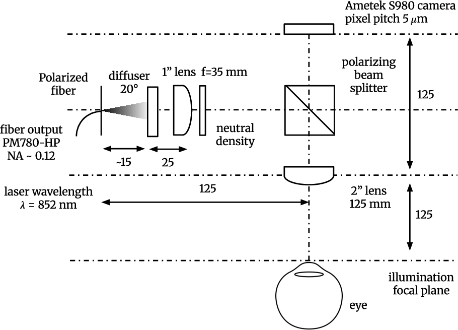
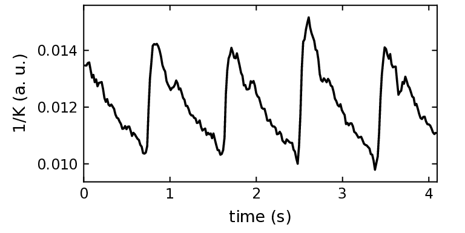
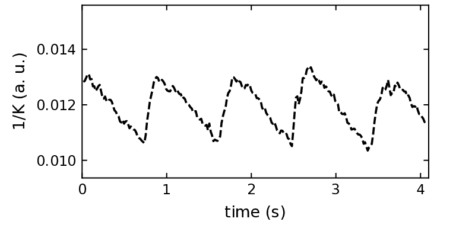
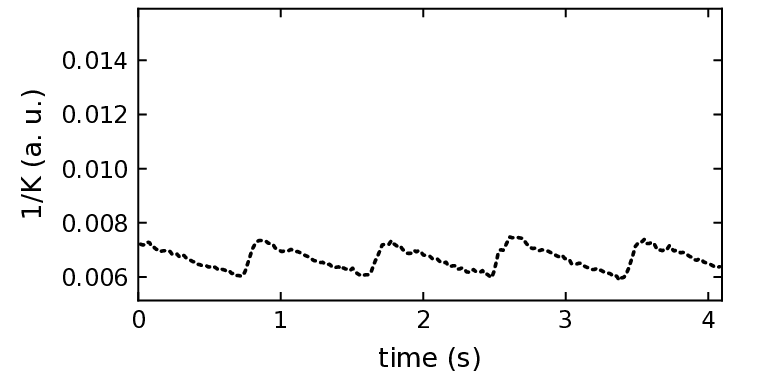

人视网膜高速激光散斑对比度成像
摘要
我们展示了人视网膜的实时激光散斑对比度成像，使用 Phantom S980 流式相机，在 像素、8 位位深和 1000 帧/秒下，采用 曝光。我们报告了来自一名健康 25 岁正视男性右眼视盘周围视网膜的四段记录，在未使用药物散瞳的情况下采集，使用 852-nm 漫射麦克斯韦照明，入射光功率为 5.0 mW。每段记录包含 4096 帧（4.10 s），所报告记录中的全部 16384 帧均被保留。在 NVIDIA RTX 5090 上运行的开源 Holoflow 软件，在 个空间像素和 16 帧非重叠块上计算 ，产生 62.5 幅对比度图/s，渲染速率为 60 帧/s，且无额外平均。标称原始输入吞吐量为 8.29 Gpixel/s。视网膜主要动脉和静脉分支以及更小的视盘周围血管均被可视化。如补充视频所示，在主要视网膜动脉和静脉中可见心动周期内的变化。区域逆对比度曲线显示动脉重搏切迹和自发性静脉搏动。这项单志愿者演示为高通量视网膜散斑对比度可视化确立了一个工作点。生理学观察为描述性的；对比度是依赖仪器的可观测量，而非经过校准的血流速度。
I 引言
血流动力学提供关于视网膜循环的功能信息，补充血管形态学。有用的测量必须捕捉时间变化，同时保留足够的空间信息以区分血管区域。激光散斑对比度成像（LSCI）通过相干光强度图案的统计特性来解决这一问题。早期工作展示了基于单次曝光散斑摄影的流可视化，包括早期人眼底成像，随后是数字激光散斑对比度分析（LASCA）[16, 3, 4]。视网膜实现随后采用时间统计和内窥镜成像来研究血流相关信号和生理响应[8, 9, 48, 37]。千赫兹相机采集也已用于非视网膜多曝光散斑成像，其处理输出具有不同的速率[18, 19]。高效滚动统计算法、图形处理器实现和专用可编程硬件是实时散斑处理的既有先例[53, 28, 58, 22]。
激光散斑对比度成像（LSCI）这一术语描述的是成像模式，而激光散斑对比度分析（LASCA）强调对比度计算。空间、时间以及合并的时空估计器使用不同的光强样本集合。时空对比度估计在一个统计邻域内组合相邻像素和连续帧 [39]。其精密度取决于所采样散斑的数量与相关性、探测器采样以及数值实现 [14, 25, 52, 7]。因此，一个核内的样本数并不等同于独立观测数。
人视网膜散斑成像已支持搏动性测量。一种临床激光散斑血流图（LSFG）实现以 30 frames/s 在约四秒内采集 118 幅图像，相机曝光时间为 2-ms，并报告平均模糊率作为相对血流指数 [31]。手持式视网膜 LSCI 也已得到研究 [40]。XyCAM RI 实现以 82 frames/s 采集人视网膜图像，并使用跨 15 帧的 空间邻域估计对比度，从而实现动脉和静脉波形分析 [10]。多曝光人视网膜成像则结合多个相机曝光时间，以估计与去相关有关的量并评估重复性 [38]。
这些方法的数值输出相互关联但彼此不同。LSFG 报告平均模糊率（MBR）及其区域或脉搏波汇总指标，而相对血流量（RFV）对经背景校正的血管轮廓进行积分 [49, 45]。与激光多普勒测速和 Doppler 光学相干层析成像的验证支持 RFV 作为相对视网膜血流指数，其响应取决于工作范围 [45, 30]。视网膜和视神经乳头自调节反应也已使用 LSFG 研究 [56]。因此，应将数值定量与重复性同以绝对速度或体积流量单位进行的校准区分开来。
临床前研究已确立视网膜 LSCI 的更多应用，包括药理性血管反应和血管运动 [32, 33]，以及相对血流测量和宽场仪器的实验验证 [36, 35]。最近，Tate 及其同事报告了在 376.2 frames/s 和 2.5-ms 曝光下的小鼠视网膜记录，并分析了详细的搏动波形 [51]。这些结果促使人们仔细表征人视网膜测量中的时间采样。
目前的人体应用包括青光眼血流动力学分析、早产儿视网膜病变婴儿中与荧光素血管造影的比较，以及非渗出性年龄相关性黄斑变性中的视网膜/脉络膜血流指数 [54, 44, 26]。近期工作进一步评估了以视盘和黄斑为中心的人体激光散斑对比成像（LSCI）测量的日内和日间重复性 [55]。这些研究既推动了区域性和时间性终点的提出，也要求明确说明每个指数所依据的血管区域和光学采样。
在此，我们展示一项单名志愿者演示，涉及持续计算吞吐量、视网膜血管可视化以及快速生理动态的评估。人体视网膜图像以 1000 帧/s 采集，所有输入帧均在不重叠时间块中采用池化 对比度估计器处理。该方案产生 62.5 幅对比度图/s，渲染速度为 60 帧/s。标称聚合时长为 16 ms，而已发表的 15 帧 XyCAM 分析约为 183 ms。该比较描述的是采样参数。本演示报告了采集与处理配置、定性血管可视化，以及同一受试者四次视盘周围记录中视网膜主要动脉和静脉的可见心动周期变化（补充视频）。
| Implementation | Acquisition and analysis |
|---|---|
| Human LSFG-NAVI [31] | 30 帧/s；2-ms 曝光。约 4 s 内采集 118 幅图像；心动周期处理。 |
| Human XyCAM RI [10] | 82 帧/s；所引研究未说明相机曝光。 核；标称支撑约 183 ms。 |
| Human retinal MESI [38] | 多曝光序列：采集 0.5–64 ms。约 4.7 s 内采集 104 幅图像；保留 2–64 ms 用于拟合血流图。 |
| Murine retinal LSCI [51] | 376.2 帧/s；2.5-ms 曝光。 空间对比度，随后进行信号滤波。 |
| Present human recordings | 以 1000 帧/s； 曝光。 池化对比度；标称支撑 16 ms；62.5 幅对比度图/s；60 帧/s 渲染。 |
II 材料与方法
II.1 参与者与实验方案
本文报告同一名健康 25 岁正视眼男性右眼的四次记录。图像在获得书面知情同意后采集。操作遵循《赫尔辛基宣言》。成像在暗室中未使用药物散瞳进行，使用标准头托和下颌托，且不设固视目标。各次记录间隔数秒，以便眨眼。成像目标为视盘邻近区域的视盘周围视网膜。每次记录包含以 1-ms 间隔连续采集的 4096 帧，对应标称时长 4.10 s。所报告的四次记录中的全部 16384 帧均被保留。未记录任何生理参考信号。
II.2 光学采集与探测器采样
照明由中心波长 nm 的体全息光栅激光二极管（Thorlabs FPV852P）提供。在照明臂中，工程扩散器（Thorlabs ED1-C20-MD；直径 25.4 mm， 圆形平顶分布，SM1 螺纹镜架）之后是已安装的 N-BK7 双凸透镜（Thorlabs LB1811-B-ML；直径 25.4 mm，焦距 35 mm，650–1050 nm 增透膜），用于准直漫射光束。双凸目镜（Thorlabs LB1106-B；直径 50.8 mm，焦距 125 mm）提供漫射麦克斯韦照明并收集眼底返回光，采用 Bratasz 等人的漫射照明方法 [2]。由眼底后向散射的正交偏振光经目镜收集，用激光线偏振立方分束器（PBS；Edmund Optics，库存号 47-570；35 mm 立方体，设计波长 850 nm）选通，并由 Phantom S980 相机（Ametek Vision Research）以 的传感器像素间距记录。传感器置于目镜焦平面处，光学系统使视网膜平面与传感器平面共轭。角膜位于目镜前方 125 mm 处。未使用参考光束；相机直接记录眼底光强序列。激光线宽、光瞳直径和有效光阑直径以及散斑尺寸均未独立表征。下文的视网膜采样与视场为标称几何估计值。
视网膜光强序列以 帧/s（ ms）覆盖 个像素记录，光强位深为 8 位。曝光时间为 ，标称帧间间隔为 ，积分占空比为 98.8%。两块 Euresys Coaxlink QSFP+ 图像采集卡将数据传输至 Intel Xeon 工作站的 CPU RAM，再传输至 NVIDIA RTX 5090 GPU。所有输入帧均被处理，对应 8.29 Gpixel/s，即未压缩的 8 位有效负载为 8.29 GB/s（66.35 Gbit/s），不含传输开销。 原始光强记录以 8 位位深保存；对比度图实时显示。
假设正视眼中从后节点到视网膜的距离为 17 mm，则估计的视网膜像素间距为每像素 [17]。由此得到约 mm 的全画幅覆盖范围（）以及 核的 覆盖范围。这些基于几何的估计假设传感器置于焦平面且无额外放大。未进行单独校准和可用视场评估。像素间距并不代表光学分辨率。

II.3 照明与眼部暴露
激光连续开启，在 852 nm 处进入眼内的标称光功率为 5.0 mW。漫射照明遵循 Bratasz 等人所述方法 [2]，所报道的目镜焦距为 125 mm。相机曝光与照明持续时间是两个独立量： 积分和 98.8% 探测器占空比不对连续照明形成门控。所报道的四次记录代表 16.38 s 的总采集时间，不包括其间的照明和装调时段。总照明持续时间约为 2 min。
II.4 散斑对比度处理与时序
散斑对比度按 计算，其中 和 是跨 16 帧的 像素邻域内光强的均值和总体标准差 [39]。所有输入帧均按不重叠的 16 帧块处理，每个内部邻域获得 400 个样本，并且每 16 ms 生成一幅对比度图（ 幅/s）。每次 4096 帧记录包含 256 个完整块。一个块的曝光支撑为 15.99 ms。图以 60 帧/s 显示，未进行额外平均。
处理使用 Holoflow 的直接 CUDA 内核后端，分支 feat/contrast-pipeline，提交 3d87195eb124 [12]。该实现使用 32 位浮点，在图像边界处裁剪空间邻域，对非正局部均值返回零，并将计算出的负方差截断为零。块节奏和曝光支撑描述采集时序；处理和从采集到显示的延迟未独立进行基准测试。
| Quantity | Value |
|---|---|
| Participant | 健康男性，25 岁；右眼 |
| Pupil / imaged region | 未散瞳；视盘周围视网膜 |
| 波长 / 进入功率 | 852 nm / 5.0 mW |
| Camera / input format | Phantom S980; |
| Sensor pixel pitch | |
| 采集速率 / 间隔 | 1000 frames/s / 1 ms |
| 曝光 / 积分占空比 | / 98.8% |
| Recordings | 报告 4 次；每次 4096 帧（4.10 s） |
| Raw-input rate | 8.29 Gpixel/s |
| GPU / host CPU | NVIDIA RTX 5090 / Intel Xeon |
| Frame grabbers | 两个 Euresys Coaxlink QSFP+ |
| Contrast kernel | ; 400 samples |
| 标称 / 物理支撑 | 16 ms / 15.99 ms |
| Temporal stride | 16 帧；非重叠块 |
| Contrast-map production | 62.5 幅图/s；256 块/记录 |
| 渲染 / 额外平均 | 60 frames/s / none |
| 预处理 / 可观测对象 | None / |
| Recorded bit depth | 8 bits/pixel |
| Nominal retinal sampling | /pixel (estimated) |
| Nominal retinal field | mm (estimated) |
| Sensor angular field | (estimated) |
II.5 数据保留与区域评估
未进行任何预处理：未做暗偏置扣除、平场或坏点校正、饱和掩蔽、照明归一化、噪声方差扣除、运动校正或眨眼剔除。所有记录帧均被使用。通过目视判断信号质量适合血管观察，实时观看期间未注意到与扫视相关的闪光。信噪比、饱和比例和探测器噪声均未量化。
评估关注实时图和补充视频中视网膜主动脉与主静脉的视网膜血管可见性及心动周期变化。区域迹线通过在动脉、静脉和血管间区域内在空间上对取平均，然后取任意单位的获得。每条区域迹线包含255个样本，间隔16 ms，未做平滑或进一步的时间平均。名义块起始时间跨度为16–4080 ms。未进行统计比较或绝对血流校准。没有心电图（ECG）、脉搏或独立血流参考，也未进行核长度比较或重复性分析。所有四条报告记录均来自同一受试者和同一只眼。
III 结果
III.1 采集与分析工作点
该工作点结合了像素、8位、1000帧/s的采集和曝光，并在NVIDIA RTX 5090上进行在线处理。四条报告记录各包含4096帧，均使用核和非重叠时间块处理。所得输出节奏为62.5 幅图/s，渲染帧率为60帧/s，且未做额外平均（表2）。这些记录中的全部16384帧均被保留。标称原始输入速率为8.29 Gpixel/s，相当于传输开销前66.35-Gbit/s的8位有效载荷。
相机间隔为1 ms，标称分析窗口为16 ms，其曝光支撑为15.99 ms。相对于82帧/s下的15帧XyCAM分析，标称聚合间隔缩短了。这一参数比较并不能确立生理带宽、精密度或诊断性能方面的相应改善。未测量丢帧计数器、队列占用率以及处理和显示延迟，也未评估更长时间的不间断运行。
III.2 在体视网膜对比度图
在视盘周围的视乳头周围区域可见视网膜主要动脉分支和静脉分支，以及更小的视网膜血管。这些观察是定性的，基于实时对比度观看。未计算血管/背景分离指标或自动解剖分类。图2展示了一幅代表性散斑对比度图像。
III.3 心动周期中的动脉和静脉变化
心动周期中与血流相关的对比度变化在视盘邻近区域的主要视网膜动脉和静脉中可见（补充视频）。这些视频在来自同一受试者的四次已报告记录中展示了这些变化。图 3 显示了区域动脉、静脉和血管间逆对比度曲线。动脉曲线呈现重搏切迹，静脉曲线呈现自发性搏动。这些搏动也可见于补充视频中。未量化脉搏幅度、血管间时序差异以及独立同步的心动周期相位。



III.4 数据路径与计算吞吐量
相机数据流经过两个 Euresys Coaxlink QSFP+ 帧采集卡进入中央处理器（CPU）内存，然后送入 RTX 5090。直接内核后端从所有输入帧计算对比度，而原始记录以 8-bit 位深保存，对比度图则在线显示。所述的输入速率和对比度图速率描述的是运行配置；对这些记录而言，没有单独的延迟分布、队列深度轨迹或独立丢帧基准。
IV 讨论
IV.1 相对于视网膜散斑成像的定位
当前工作点扩展了表 1 中所总结的人视网膜实现所使用的相机采样率。该估计器属于成熟的时空激光散斑对比成像（LSCI）[39]。与 XyCAM 实现的比较在其空间支撑方面尤其直接，因为两者都使用 邻域，而其 15 帧时间支撑与当前的 16 帧核 [10] 略有不同。更高的相机采样率缩短了该时间聚合所代表的持续时间。它本身并不能确立对比度精密度的提高或临床实用性。所报告的实现在 8.29-Gpixel/s 工作点处理所有输入帧，并以 62.5 maps/s 生成对比度图。其生物学范围是一只健康眼，涵盖四次所报告的视盘周围记录。补充视频和区域逆对比度曲线中观察到了视网膜主要动脉和静脉的血管可见性及心动周期变化，但未进行生理参考验证和独立计时基准测试。
IV.2 更高相机采样率的贡献
更短的聚合间隔可以保留区域对比度信号的更快变化，并减少心脏波形不同相位的混合。其是否能以足够精密度做到这一点，取决于实测信噪比和时间响应。必须对照光子统计、探测器噪声、眼动以及有效独立散斑数来评估这一收益。每个核中的 400 个样本是标称计数；在固定曝光和基础去相关时间下，提高相机采样也可能增加帧间相关性。空间邻域同样跨越由放大率决定的物理视网膜面积，在能够评估空间分辨率之前必须报告该面积 [25, 52]。
光强数字化也与当前的 8 位记录有关。量化会产生依赖光强的对比度偏置 [47]，而空间对比度的替代数值实现会改变后续的 MESI 估计 [7]。因此，未来的定量流程应对照具有匹配方差、窗口和边界约定的直接高精度计算进行验证，并依据实测探测器响应进行校准。
因此，高速采集应通过不同的量来描述：曝光持续时间、帧间隔、估计器支撑、分析步长、额外滤波，以及在相关时实测的处理延迟。仅凭采集速率并不能确立实时处理。处理在 RTX 5090 上在线进行，每个不重叠的 16 帧块生成一张图（62.5 maps/s），以 60 frames/s 渲染且不进行额外平均。报告了四次约 4.1-s 的记录。更长运行的稳定性、丢帧行为、队列占用以及处理/显示延迟未独立表征。
IV.3 实时处理与吞吐量基准
比较必须区分相机输入、对比度转换和血流模型推理（表 3）。去噪耗时 [61] 以及传感器上限或连拍采集 [13, 50] 描述了另外一些不同阶段。所列像素速率对已发表的图像尺寸和耗时进行了归一化；它们并未提供硬件或估计器的匹配比较。
| Implementation | Configuration and scope |
|---|---|
| Laparoscopic GPU [62] | 在 89 frames/s 下；0.37 Gpixel/s 处理。 |
| Smartphone [57] | 在 20 Hz 下；0.24 Gpixel/s 处理。 |
| Neurosurgical CPU [43] | 对比度转换在 0.33 ms 内完成；3.97 Gpixel/s 阶段容量。采集：60 frames/s。 |
| FPGA/SoC MESI [19, 20] | 输入为 1000 frames/s；1.31 Gpixel/s。连续 灌注图，速率为 15.6 frames/s。 |
| REMI [41] | 对比度立方体约 0.12 s；约 8 幅推断图/s。 |
| Neural MESI [59] | 图约 400 ms；约 2.5 幅推断图/s。 |
| Present operating point | 8.29-Gpixel/s 原始输入； 对比度图，速率为 62.5 maps/s；60-frame/s 渲染。 |
当前的 8.29-Gpixel/s 输入、62.5-map/s 对比度生成以及 60-frame/s 渲染描述的是四次约 4.1-s 记录中的不同阶段。仍需要独立的处理延迟、丢帧和更长运行稳定性测量来表征持续性能。
实时多曝光成像的前景。 未来的 MESI 流水线可对 个连续原始光强帧求和，并在标称 1–64-ms 合成曝光下重新计算空间对比度 [18, 6]。这种依赖曝光的测量将把当前的合并估计器扩展到去相关时间估计 [34, 38]。候选加速器包括经校准的降参数 GPU 查找表、REMI 或 spatial-REMI [41, 42]，以及神经推理 [19, 20, 59]。曝光子集优化 [23] 可减少处理量，而可编程多抽头 CMOS 采集 [46] 提供了传感器层面的替代方案。这种七通道方案需要至少 64 个原始帧的滚动缓冲区。每 16 帧更新一次可目标达到 62.5 幅推断图/s；32-ms 和 64-ms 通道将在更新之间重叠，并保留其完整时间支撑。低于原生积分时间的通道需要更短的相机曝光。 前向模型必须考虑 次积分、 间隙、探测器噪声和静态光贡献。相关曝光通道下的参数可辨识性、视网膜运动鲁棒性，以及与独立血流测量的一致性，都需要验证。该推断图速率仍是视网膜流水线的一个预期目标。
IV.4 对比度与生理特异性的解释
所测可观测量是视网膜光强的变异系数。它与血液运动的关系取决于曝光、散斑采样、静态与动态散射以及所选集合[15, 34]。局部解剖变异、照明变化和眼动也会影响合并对比度。仅凭搏动性无法将信号校准为速度或流量单位。
光散射模型通常假设指数或高斯场去相关，检测因子则考虑相干性、采样以及静态–动态场混合[1, 60, 15, 27]。单次散射和多次散射描述取决于粒子运动和光子路径；血管几何形状和采样深度会改变所恢复的指标[11, 24]。这些模型提供解释性背景；均未拟合到当前记录。
LSFG 衍生的 MBR、XyCAM 血流速度指标和 RFV 是数值可观测量，采用仪器相关单位或任意单位，而不是可互换的物理测量值[49, 45, 10]。RFV 验证包括视网膜静脉分叉处的守恒性以及与激光多普勒测速法的比较；随后一项体模和人 Doppler-OCT 研究也发现较高速度下存在饱和[45, 30]。这些结果支持特定的相对测量，但未建立从模糊或对比度到绝对视网膜血流的通用换算。同样，拟合逆相关时间并不能消除对散射模型的依赖。跨血管比较仍可能对血管直径和动态散射事件数目敏感[24, 27]。
与血流相关的对比度是运动引起的散斑可见度降低，而不是血容量、血管密度或氧饱和度的直接测量。在适当模型和工作范围内，更快的去相关会降低 并提高逆对比度指标。在稳定采集条件下，百分比变化和波形特征可能有用，但非线性变换会改变波形形状；MBR、、、RFV 和 应各自保留其定义。绝对体积流量估计还需要经过验证的速度测量和血管横截面几何形状，而不是仅将流量单位赋予对比度。
IV.5 眼底采样的血管区域
眼底散斑研究区分可分辨的视网膜小动脉和小静脉、视神经乳头血管与组织、可见视网膜血管之间的区域，以及可识别的大脉络膜血管[49, 5, 29]。在 LSFG 中，整个视盘、其血管掩膜和其组织掩膜上的平均 MBR 通常分别记为 、 和 。组织掩膜排除可分辨的大血管，并提供与毛细血管相关的视神经乳头指标；它并不分辨单个毛细血管或其深度[49]。血管 RFV 使用背景校正来减少底层组织贡献[45]。
IV.6 局限性与下一步验证步骤
该演示包含一名健康25岁正视眼男性未散瞳右眼的视盘旁视网膜四次约4.1 s的记录。血管可见性和心动周期变化通过图像、视频和区域反对比度轨迹进行描述性评估。未获得统计波形分析、参考血流测量、生理同步或数值对比度分离终点。使用了所有记录的帧，但未进行专门的采集丢失和延迟测试。视觉上无明显扫视相关闪光并不能量化运动敏感性。
几何视网膜尺度未进行个体校准。光瞳和有效光阑直径、散斑采样、探测器噪声和信号精密度未测量，且未应用运动或噪声校正。未记录依据ISO 15004-2:2024 [21]进行的设备特异性曝光评估。这些局限性限制了当前观察的生理学和定量解释。
V 结论
我们展示了实时人体视网膜LSCI，使用像素、8位采集，帧率1000 frames/s，曝光为，并在RTX 5090上进行在线处理。非重叠的对比度估计产生62.5 maps/s，用于60-frame/s渲染，且无需额外平均。在一只未散瞳健康右眼的四次记录中，视盘附近可见视网膜主要动脉、静脉分支及更小血管。视网膜主要动脉和静脉中可见心动周期变化（补充视频）。区域逆对比度曲线显示了动脉重搏切迹和自发性静脉搏动。这些描述性观察支持高吞吐量视网膜血管可视化；定量生理性能和独立计算基准仍有待建立。
致谢。
This work was supported by ANR LIDARO (ANR-22-CE19-0033-01) and IHU FOReSIGHT.补充视频
数据与代码可用性
原始8位记录将随本研究公开提供；仓库细节将随数据发布一并给出。处理使用了开源Holoflow软件，其按Apache License 2.0分发，可从https://github.com/DigitalHolography/Holoflow [12]获取。实验实现为分支feat/contrast-pipeline，提交3d87195eb124（2026年10月22日；版本0.2.0-dev.4），使用直接CUDA内核后端。参考文献固定了完整提交。原始图像以8位深度保存；采用浮点计算并实时显示。
披露
作者声明无竞争性利益。
References
- [1] (2005) Speckle-visibility spectroscopy: A tool to study time-varying dynamics. Rev. Sci. Instrum. 76 (9), pp. 093110. External Links: Document, Link Cited by: §IV.4.
- [2] (2026) Diffuse Maxwellian illumination for safe wide-field retinal Doppler holography. Note: arXiv:2212.13347v3Originally posted 2022; version 3, revised 15 May 2026 External Links: Document, Link Cited by: §II.2, §II.3.
- [3] (1982) Retinal blood-flow visualization by means of laser speckle photography. Invest. Ophthalmol. Vis. Sci. 22 (2), pp. 255–259. External Links: Link Cited by: §I.
- [4] (1996) Laser speckle contrast analysis (LASCA): a nonscanning, full-field technique for monitoring capillary blood flow. J. Biomed. Opt. 1 (2), pp. 174–179. External Links: Document, Link Cited by: §I.
- [5] (2018) Assessment of choroidal blood flow using laser speckle flowgraphy. Br. J. Ophthalmol. 102 (12), pp. 1679–1683. External Links: Document, Link Cited by: §IV.5, §IV.5.
- [6] (2022) Synthetic exposure with a CMOS camera for multiple exposure speckle imaging of blood flow. Sci. Rep. 12 (1), pp. 4708. External Links: Document, Link Cited by: §IV.3.
- [7] (2025) Choice of numerical implementation of spatial contrast calculation impacts microcirculation quantitation in laser speckle contrast imaging. J. Biomed. Opt. 30 (4), pp. 046006. External Links: Document, Link Cited by: §I, §IV.2.
- [8] (2007) Simplified laser-speckle-imaging analysis method and its application to retinal blood flow imaging. Opt. Lett. 32 (15), pp. 2188–2190. External Links: Document, Link Cited by: §I.
- [9] (2008) Temporal statistical analysis of laser speckle images and its application to retinal blood-flow imaging. Opt. Express 16 (14), pp. 10214–10219. External Links: Document, Link Cited by: §I.
- [10] (2020) Portable, non-invasive video imaging of retinal blood flow dynamics. Sci Rep 10 (1), pp. 20236. External Links: Document, Link Cited by: Table 1, §I, §IV.1, §IV.4.
- [11] (2014) Imaging depth and multiple scattering in laser speckle contrast imaging. J. Biomed. Opt. 19 (8), pp. 086001. External Links: Document, Link Cited by: §IV.4, §IV.5.
- [12] (2026) Holoflow: high-throughput image processing and speckle-contrast implementation. Note: https://github.com/DigitalHolography/Holoflow/tree/3d87195eb1245fe7cf0bc4b165b116bdd99dd4e9Apache License 2.0; experimental contrast-branch implementation at commit 3d87195eb124, 22 October 2026, version 0.2.0-dev.4; direct CUDA kernel backend; accessed 24 October 2026 Cited by: §II.4, Data and code availability.
- [13] (2015) High-speed multi-exposure laser speckle contrast imaging with a single-photon counting camera. Biomed. Opt. Express 6 (8), pp. 2865–2876. External Links: Document, Link Cited by: §IV.3.
- [14] (2008) Statistics of local speckle contrast. J. Opt. Soc. Am. A 25 (1), pp. 9–15. External Links: Document, Link Cited by: §I.
- [15] (2008) Can laser speckle flowmetry be made a quantitative tool?. J. Opt. Soc. Am. A 25 (8), pp. 2088–2094. External Links: Document, Link Cited by: §IV.4, §IV.4.
- [16] (1981) Flow visualization by means of single-exposure speckle photography. Optics Communications 37 (5), pp. 326–330. External Links: Document, Link Cited by: §I.
- [17] (2022) Radial and tangential retinal magnifications as functions of visual field angle across spherical, oblate, and prolate retinal profiles. Translational Vision Science & Technology 11 (9), pp. 10. External Links: Document, Link Cited by: §II.2.
- [18] (2018) A 15.6 frames per second 1-megapixel multiple exposure laser speckle contrast imaging setup. Journal of Biophotonics 11 (2), pp. e201700069. External Links: Document, Link Cited by: §I, §IV.3.
- [19] (2020) Real-time video-rate perfusion imaging using multi-exposure laser speckle contrast imaging and machine learning. J. Biomed. Opt. 25 (11), pp. 116007. External Links: Document, Link Cited by: §I, §IV.3, Table 3.
- [20] (2023) Speed-resolved perfusion imaging using multi-exposure laser speckle contrast imaging and machine learning. J. Biomed. Opt. 28 (3), pp. 036007. External Links: Document, Link Cited by: §IV.3, Table 3.
- [21] (2024) Ophthalmic instruments—fundamental requirements and test methods—part 2: light hazard protection. International Standard Technical Report ISO 15004-2:2024, International Organization for Standardization, Geneva, Switzerland. Note: Second edition, December 2024 External Links: Link Cited by: §IV.6.
- [22] (2011) Dedicated hardware processor and corresponding system-on-chip design for real-time laser speckle imaging. J. Biomed. Opt. 16 (11), pp. 116008. External Links: Document, Link Cited by: §I.
- [23] (2014) Optimization of camera exposure durations for multi-exposure speckle imaging of the microcirculation. Biomed. Opt. Express 5 (7), pp. 2157–2171. External Links: Document, Link Cited by: §IV.3.
- [24] (2015) Flux or speed? Examining speckle contrast imaging of vascular flows. Biomed. Opt. Express 6 (7), pp. 2588–2608. External Links: Document, Link Cited by: §IV.4, §IV.4.
- [25] (2008) Detrimental effects of speckle-pixel size matching in laser speckle contrast imaging. Opt. Lett. 33 (24), pp. 2886–2888. External Links: Document, Link Cited by: §I, §IV.2.
- [26] (2025) Laser Speckle Flowgraphy Reveals Widespread Reductions in Ocular Blood Flow in nonexudative Age-Related Macular Degeneration. Am. J. Ophthalmol. 273, pp. 92–106. External Links: Document, Link Cited by: §I, §IV.5.
- [27] (2024) Dynamic light scattering and laser speckle contrast imaging of the brain: theory of the spatial and temporal statistics of speckle pattern evolution. Biomed. Opt. Express 15 (2), pp. 579–593. External Links: Document, Link Cited by: §IV.4, §IV.4, §IV.5.
- [28] (2008) Fast blood flow visualization of high-resolution laser speckle imaging data using graphics processing unit. Opt. Express 16 (19), pp. 14321–14329. External Links: Document, Link Cited by: §I.
- [29] (2022) Correlation Between Laser Speckle Flowgraphy and OCT-Derived Retinal and Choroidal Metrics in Healthy Human Eye. Transl. Vis. Sci. Technol. 11 (6), pp. 15. External Links: Document, Link Cited by: §IV.5, §IV.5.
- [30] (2016) Measurements of Retinal Perfusion Using Laser Speckle Flowgraphy and Doppler Optical Coherence Tomography. Invest. Ophthalmol. Vis. Sci. 57 (13), pp. 5417–5425. External Links: Document, Link Cited by: §I, §IV.4, §IV.6.
- [31] (2016) Ocular Blood Flow Measurements in Healthy White Subjects Using Laser Speckle Flowgraphy. PLoS ONE 11 (12), pp. e0168190. External Links: Document, Link Cited by: Table 1, §I.
- [32] (2016) Laser speckle analysis of retinal vascular dynamics. Biomed. Opt. Express 7 (4), pp. 1375–1384. External Links: Document, Link Cited by: §I, §IV.6.
- [33] (2017) Rat retinal vasomotion assessed by laser speckle imaging. PLoS ONE 12 (3), pp. e0173805. External Links: Document, Link Cited by: §I, §IV.6.
- [34] (2008) Robust flow measurement with multi-exposure speckle imaging. Opt. Express 16 (3), pp. 1975–1989. External Links: Document, Link Cited by: §IV.3, §IV.4.
- [35] (2021) Development of a Preclinical Laser Speckle Contrast Imaging Instrument for Assessing Systemic and Retinal Vascular Function in Small Rodents. Transl. Vis. Sci. Technol. 10 (9), pp. 19. External Links: Document, Link Cited by: §I.
- [36] (2020) Validating a low-cost laser speckle contrast imaging system as a quantitative tool for assessing retinal vascular function. Sci Rep 10 (1), pp. 7177. External Links: Document, Link Cited by: §I.
- [37] (2013) Laser speckle contrast imaging of blood flow in rat retinas using an endoscope. J. Biomed. Opt. 18 (9), pp. 090501. External Links: Document, Link Cited by: §I.
- [38] (2022) Inter-day repeatability assessment of human retinal blood flow using clinical laser speckle contrast imaging. Biomed. Opt. Express 13 (11), pp. 6136–6152. External Links: Document, Link Cited by: Table 1, §I, §IV.3, §IV.6.
- [39] (2010) Spatiotemporal laser speckle contrast analysis for blood flow imaging with maximized speckle contrast. J. Biomed. Opt. 15 (1), pp. 016003. External Links: Document, Link Cited by: §I, §II.4, §IV.1.
- [40] (2018) Noninvasive Assessment of Retinal Blood Flow Using a Novel Handheld Laser Speckle Contrast Imager. Trans. Vis. Sci. Tech. 7 (6), pp. 7. External Links: Document, Link Cited by: §I.
- [41] (2023) Quasi-analytic solution for real-time multi-exposure speckle imaging of tissue perfusion. Biomed. Opt. Express 14 (8), pp. 3950–3967. External Links: Document, Link Cited by: §IV.3, Table 3.
- [42] (2023) Speckle-REMI: MATLAB reference implementations of REMI and spatial-REMI. Note: https://github.com/sn-lab/Speckle-REMI/tree/9fbdf292b69e75e20174a300e0d501934ad61192Revision 9fbdf292; includes fullMESIestimates.m and fullMESIestimates_spatial.m. Accessed 24 October 2026 Cited by: §IV.3.
- [43] (2026) DASHING–LSCI: deep learning-based anatomical multiclass segmentation for human intraoperative neurosurgical guidance – laser speckle contrast imaging. Biomed. Opt. Express 17 (9), pp. 4933–4946. External Links: Document, Link Cited by: Table 3.
- [44] (2024) Association of Speckle-Based Blood Flow Measurements and Fluorescein Angiography in Infants with Retinopathy of Prematurity. Ophthalmol. Sci. 4 (4), pp. 100463. External Links: Document, Link Cited by: §I, §IV.6.
- [45] (2014) Relative Flow Volume, a Novel Blood Flow Index in the Human Retina Derived From Laser Speckle Flowgraphy. Invest. Ophthalmol. Vis. Sci. 55 (6), pp. 3899–3904. External Links: Document, Link Cited by: §I, §IV.4, §IV.5.
- [46] (2019) Multi-exposure laser speckle contrast imaging using a video-rate multi-tap charge modulation image sensor. Opt. Express 27 (18), pp. 26175–26191. External Links: Document, Link Cited by: §IV.3.
- [47] (2013) Effect of signal intensity and camera quantization on laser speckle contrast analysis. Biomed. Opt. Express 4 (1), pp. 89–104. External Links: Document, Link Cited by: §IV.2.
- [48] (2010) Imaging retinal blood flow with laser speckle flowmetry. Front. Neuroenergetics 2, pp. 128. External Links: Document, Link Cited by: §I.
- [49] (2014) Basic Technology and Clinical Applications of the Updated Model of Laser Speckle Flowgraphy to Ocular Diseases. Photonics 1 (3), pp. 220–234. External Links: Document, Link Cited by: §I, §IV.4, §IV.5, §IV.5.
- [50] (2015) Multi-exposure laser speckle contrast imaging using a high frame rate CMOS sensor with a field programmable gate array. Opt. Lett. 40 (20), pp. 4587–4590. External Links: Document, Link Cited by: §IV.3.
- [51] (2026) Development of a laser speckle contrast imaging analysis pipeline reveals a triphasic retinal blood flow waveform. Biomed. Opt. Express 17 (1), pp. 471–488. External Links: Document, Link Cited by: Table 1, §I.
- [52] (2011) Correction for spatial averaging in laser speckle contrast analysis. Biomed. Opt. Express 2 (4), pp. 1021–1029. External Links: Document, Link Cited by: §I, §IV.2.
- [53] (2008) Efficient Processing of Laser Speckle Contrast Images. IEEE Trans. Med. Imaging 27 (12), pp. 1728–1738. External Links: Document, Link Cited by: §I.
- [54] (2022) Dynamic Alterations in Blood Flow in Glaucoma Measured with Laser Speckle Contrast Imaging. Ophthalmol. Glaucoma 5 (3), pp. 250–261. External Links: Document, Link Cited by: §I.
- [55] (2026) Intraday and Interday Repeatability of Laser Speckle Contrast Imaging for Ocular Blood Flow Measurement in Healthy Subjects. Transl. Vis. Sci. Technol. 15 (9), pp. 12. External Links: Document, Link Cited by: §I, §IV.6.
- [56] (2017) Optic nerve head and retinal blood flow regulation during isometric exercise as assessed with laser speckle flowgraphy. PLoS ONE 12 (9), pp. e0184772. External Links: Document, Link Cited by: §I.
- [57] (2023) A lightweight real-time smartphone-based laser speckle contrast analyzer. Opt. Commun. 543, pp. 129613. External Links: Document, Link Cited by: Table 3.
- [58] (2011) Real-time blood flow visualization using the graphics processing unit. J. Biomed. Opt. 16 (1), pp. 016009. External Links: Document, Link Cited by: §I.
- [59] (2023) Design and validation of a convolutional neural network for fast, model-free blood flow imaging with multiple exposure speckle imaging. Biomed. Opt. Express 14 (9), pp. 4439–4454. External Links: Document, Link Cited by: §IV.3, Table 3.
- [60] (2006) Quantitative modeling of laser speckle imaging. Opt. Lett. 31 (23), pp. 3465–3467. External Links: Document, Link Cited by: §IV.4.
- [61] (2026) Real-time wavelet threshold denoising for laser speckle blood flow imaging. Sci. Rep. 16 (1), pp. 10476. External Links: Document, Link Cited by: §IV.3.
- [62] (2018) Dual-display laparoscopic laser speckle contrast imaging for real-time surgical assistance. Biomed. Opt. Express 9 (12), pp. 5962–5981. External Links: Document, Link Cited by: Table 3.